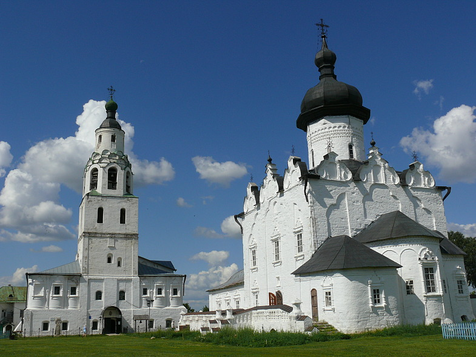
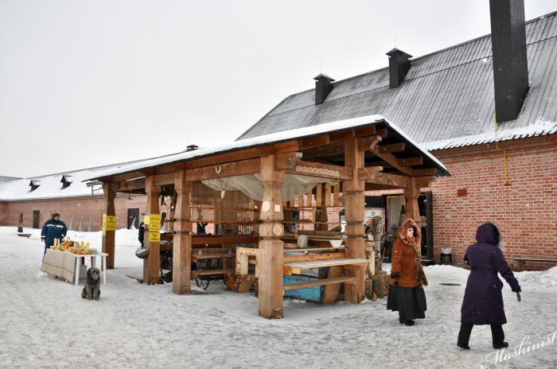
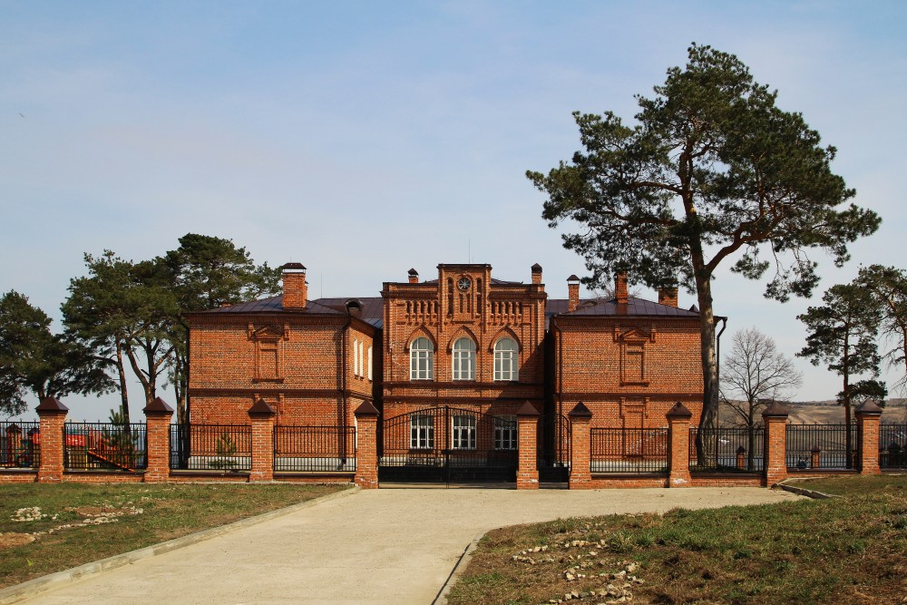

Интересные места

Собор Богоматери Всех Скорбящих Радости
Наиболее внушительное культовое сооружение на острове.

Церковь Константина и Елены
Является одной из самых ранних построек.

Успенский монастырь
Он был сооружен в середине XVI века, через несколько лет после основания города.

Конный двор
Расположен на территории музейного комплекса.

Городское училище
Действующая школа